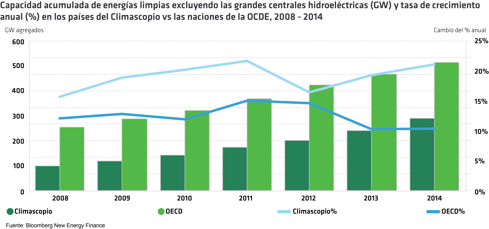
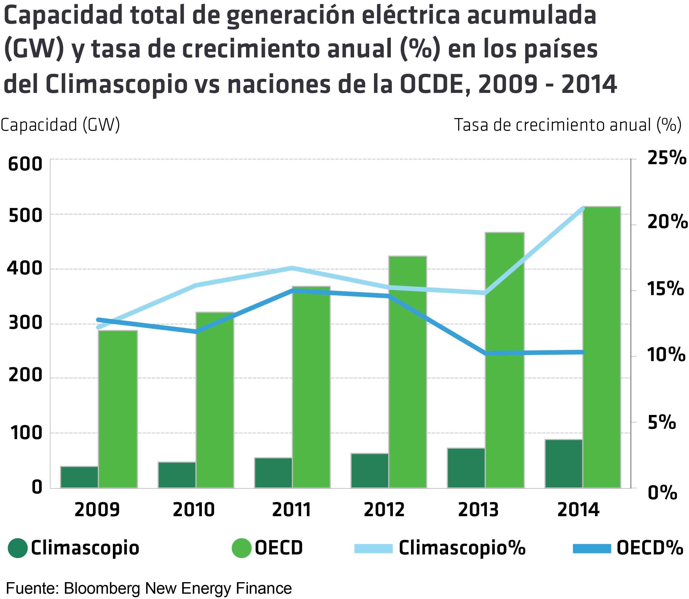
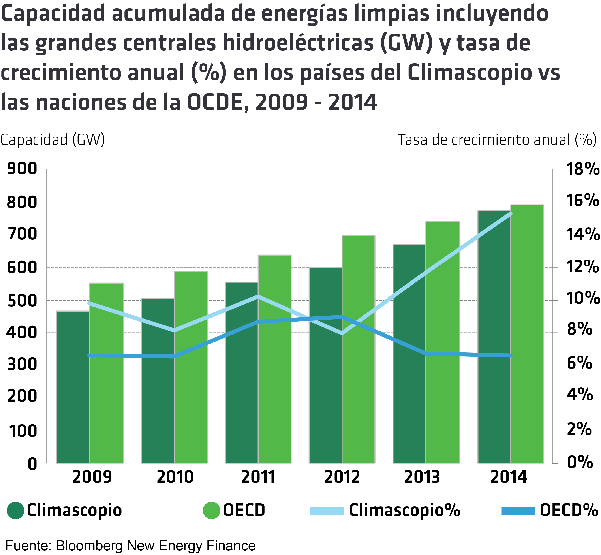
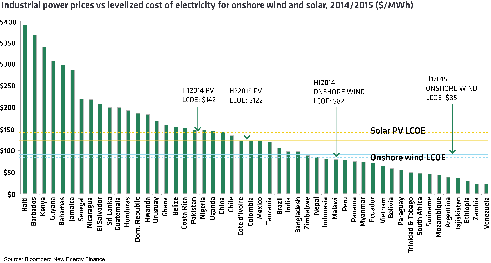

Resultados Globales
La misión fundamental de Climascopio es presentar al público un compendio dedicado a la inversión y distribución de energías limpias en las 55 naciones en desarrollo más importantes del mundo, en conjunto con 25 estados de la India y provincias de China. Para llevarlo a cabo, se han tenido en cuenta cuatro parámetros decisivos, 54 indicadores de datos, y 199 subindicadores. Al final, más de 15.000 piezas de datos individuales fueron recolectados a lo largo de un periodo de 6 meses, durante el cual el equipo de Bloomberg New Energy Finance logró visitar en persona tres cuartas partes de los países, estados y provincias.
Los autores esperan que esta valiosa compilación de datos potencialmente útiles sea aprovechada por inversionistas, desarrolladores de proyectos, fabricantes de equipos, académicos y legisladores, entre otros, y que www.global-climatescope.org se convierta en una herramienta esencial cuando se trate de conducir investigaciones significativas.
Los datos disponibles también nos permitirán sacar conclusiones sobre la actividad en estas naciones emergentes y sus mercados de manera más amplia, dado que los países investigados en Climascopio representan un gran porcentaje de las naciones que están fuera de la OCDE, en general. A continuación, se examinan algunos de los principales hallazgos de alto nivel del Climascopio de este año.
Evidente desplazamiento de norte a sur
El 2014 proveyó más evidencia con respecto a que la actividad en temas de energías limpias se está desplazando inexorablemente de “norte” a “sur “, desde países desarrollados hacia países en desarrollo. En ese sentido, varios hitos importantes fueron conquistados en 2014.
Las nuevas inversiones en generación de energía renovables se dispararon en los 55 países para alcanzar un record máximo anual de US$126 mil millones en el 2014; alrededor de US$35,5 mil millones o un 39% más, en comparación de los niveles del 2013. Por primera vez, más de la mitad de todas las nuevas inversiones anuales en proyectos de generación de energía limpia en todo el mundo fueron otorgadas a proyectos en mercados emergentes.
Vale la pena destacar este importante flujo de capital nuevo en el contexto de las negociaciones sobre el clima patrocinadas por la ONU, previstas para diciembre de 2015 en Paris. Del mismo modo, entre otros temas que se espera tratar en el marco de esta crucial conferencia, se encuentra el potencial de que los países más desarrollados inviertan en países en desarrollo para ayudar a combatir y adaptarse a los efectos del cambio climático.
La cifra más frecuentemente mencionada a nivel internacional es de US$100 mil millones de flujo anual de norte a sur. Sin embargo, los datos de Climascopio sugieren que la cantidad que se movilizó hacia estos países en el 2014, solo en proyectos de energía limpia, fue mucho más que eso. (Climascopio no intenta cuantificar la inversión en otras formas de infraestructura sostenible en mercados emergentes).
Es importante destacar que la mayoría de los US$126 mil millones que llegaron a los países estudiados en Climascopio no se originaron en países que forman parte de la OECD. Más bien, fueron inversiones “Sur-Sur” entre los 55 países, que constituyeron US$79 mil millones del total, y el resto (US$47 mil millones) estuvo formado por flujos de Norte-Sur.
El desplazamiento hacia las economías emergentes también se nota en términos de dónde se está construyendo la capacidad de generación de energía limpia. Se emplazó un total de 50,4 gigavatios (GW) de capacidad nueva limpia en los países de Climascopio, marcando un 21% de incremento con respecto al año anterior. La capacidad de energía limpia anual emplazada en mercados emergentes superó, por primera vez, la de las naciones más ricas de la OECD. Por otra parte, a nivel porcentual, la capacidad de energía limpia está creciendo dos veces más rápido en los países del Climascopio, en comparación a naciones de la OCDE.

La energía generada por grandes hidroeléctricas continúa desempeñando un papel importante en las economías emergentes y en desarrollo, especialmente en China y Latinoamérica. Es importante notar que Climascopio no incluye centrales hidroeléctricas grandes en su contabilidad de las energías limpias, ya que su objetivo es enfocarse en tecnologías que puedan ser desarrolladas con rapidez y que tengan un impacto inmediato.
Sin embargo, cuando las grandes centrales hidroeléctricas se incluyen en las cifras globales, los países del Climascopio tienen casi la misma capacidad de generación en línea que los países de la OECD: 777GW en comparación con 790GW al cerrar el año 2014. Una vez más, la tasa de crecimiento de la energía baja en carbono (incluyendo las centrales hidroeléctricas grandes) es dos veces más rápida en los países Climascopio que la de los países de la OCDE.Cuando los restantes países no miembros de la OCDE (que no son parte de Climascopio) también se incluyen, la total capacidad de energía limpia en estas naciones emergentes y en desarrollo —incluyendo a las grandes centrales hidroeléctricas— supera la de los países pertenecientes a la OCDE.
 
La importancia de China
China sigue desempeñando un papel fundamental en la evolución de la energía limpia, no sólo en los mercados emergentes, sino en todos los países. La nación agregó 35GW de nueva capacidad de generación de energía renovable por sí solo; más que toda la capacidad en línea actualmente en los 49 países de África subsahariana combinados, sin tomar en consideración a Sudáfrica y Nigeria; y atrajo US$89 mil millones en todo tipo de capital en energía limpia nueva.
Substrayendo el impacto de China, las otras 54 naciones del Climascopio lograron avances importantes en 2014. En términos porcentuales, la tasa de crecimiento para la energía limpia acumulada instalada en estos países se disparó a 21,2%, más del doble de la tasa de crecimiento observada en los países de la OCDE. En su totalidad, las naciones del Climascopio, sin tomar en consideración a China, añadieron 15,5GW de nueva capacidad durante el 2014; un salto de 64% en comparación con los 9,4GW instalados en el año anterior.
China actualmente parece encaminada hacia otro año sólido en el 2015. En los primeros seis meses del año, había desplegado unos 20 GW adicionales. Sin embargo, actualmente una cantidad considerable de energía limpia producida en China nunca llega a su destino debido a las limitaciones de transmisión. Durante la primera mitad del 2015, el 9,5% de toda la producción china de proyectos de energía solar se redujo debido a estos “cuellos de botella”. Las autoridades están tratando de abordar esto a través de las nuevas reglas de “envíos verdes”, que dictaminan que la energía limpia generada sea utilizada por los consumidores finales, pero aún queda bastante trabajo por hacer para nacionalizar esta política.

Competitividad de costo para las energías renovables
Se estima que 1,3 mil millones de personas carecen de acceso aceptable a la energía en todo el mundo. Entre algunos miembros de la comunidad del desarrollo, el debate sobre la capacidad de las energías renovables para hacer frente a este desafío continúa: los críticos insisten que solamente las fuentes fósiles de generación de energía son lo suficientemente baratas para ser costo-competitivas en este contexto.
La primera edición mundial de Climascopio, lanzada en 2014, ilustra lo extremadamente altos que son los precios de la electricidad para las empresas y los consumidores en muchas de estas naciones, lo que hace que la generación de energía renovable sea competitiva en sus costos. El estudio de este año no sólo confirmó esto, sino que además sugirió que las energías renovables están haciendo mayores progresos.
Los precios de la energía industrial se mantuvieron obstinadamente altos en muchas de las 55 naciones Climascopio en 2014, incluso cuando el “costo nivelado de la electricidad”, según los cálculos de Bloomberg New Energy Finance disminuyó un 15% año a año. Los precios de la energía eólica se han mantenido más o menos nivelados, pero la tecnología ya tiene precios competitivos en muchos mercados emergentes.
Crecimiento de la energía limpia a pesar de los cambios macroeconómicos
Lo que hace que los progresos alcanzados en el 2014 sean mucho más notables es que los mismos se llevaron a cabo mientras que una serie de países experimentaban un desaceleramiento del crecimiento económico. El crecimiento del producto interno bruto promedio entre las naciones Climascopio cayó a 5,7% en 2014, de 6,4% en 2013 y la desaceleración fue más aguda en varios de los países más grandes de la encuesta. El crecimiento del PIB de Brasil, por ejemplo, bajó de 2,8% en el 2013 a sólo un 0,1% en el 2014. Sudáfrica disminuyó de 2,2% a 1,5%; China, mientras tanto, disminuyó de 7,4% a 7,1%, según las estadísticas oficiales del gobierno.
¿Qué podría explicar este contraste entre el excepcional crecimiento de las energías limpias y el algo menos excepcional crecimiento macroeconómico? En primer lugar, hay un problema potencial de oportunidad. En varios países, la desaceleración económica comenzó hacia el segundo semestre de 2014. Así, cualquier impacto potencial negativo sobre la construcción de energía limpia pudo haber sido silenciado. Por el contrario, la crisis puede ser sentida posteriormente.
Un segundo punto de vista, un tanto más optimista es que el desarrollo de energía limpia se está convirtiendo simplemente en una parte fundamental de la forma en que estos países se desarrollan y añade nueva capacidad para alcanzar la demanda de energía local.
Desde el comienzo del año 2015, las perspectivas económicas de Brasil, China, Sudáfrica y otros mercados clave del Climascopio se han vuelto aún más negativas. El tiempo dirá si estas nuevas condiciones mucho más desafiantes generaran un obstáculo en la continuación del crecimiento de la energía limpia - o si las renovables continuaran siendo resistentes a estos nuevos desafíos.
Las puntuaciones del Climascopio
Al igual que en el primer Climascopio mundial lanzado hace un año, los resultados a nivel de país de este año retratan naciones que avanzan rápidamente en el camino de adoptar el desarrollo de energía limpia, aunque con una distancia considerable aun por recorrer. La encuesta puntuó naciones, provincias chinas y estados de la India sobre una base 0-5, tomando en consideración 54 indicadores subyacentes. Este año, la puntuación media en todos los países llegó a 1,14. Aunque esto representa un avance con respecto a la puntuación media de 1,11 del año pasado, es nuevamente un indicativo de que queda mucho trabajo adicional por hacer. Mientras que 27 países vieron sus calificaciones generales mejorar año a año, 28 países las vieron disminuir.
Entre los mejores puntuados, hubo consistencia en relación al Climascopio del año pasado, con las mismas naciones posicionándose entre los cinco primeros lugares, pero en un orden ligeramente diferente. Una vez más, China obtuvo la mayor puntuación general con 2,29; Brasil nuevamente fue el segundo en la lista, pero vio disminuida su puntuación ligeramente, Chile, Sudáfrica y la India completaron los cinco primeros lugares del ranking.
A nivel regional, las 10 naciones asiáticas lograron la puntuación media global más alta con 1,40; siendo claramente impulsadas por la alta puntuación de China, así como por los buenos resultados presentados por la India. Las 26 naciones de América Latina y el Caribe lograron una puntuación media de 1,09, mientras que los países de África obtuvieron 1,06.
Como se mencionó anteriormente, China registró otro año sin precedentes en términos de inversión y despliegue, y por segundo año recibió el mayor puntaje general del Climascopio, alcanzando un puntaje de 2,29. El país tuvo la máxima puntuación en dos parámetros y no terminó más abajo del octavo lugar en ninguno de los otros parámetros.
Repitiendo su actuación en el Climascopio del año pasado, Brasil llego segundo en la lista, pero vio su puntuación disminuir de 2,17 a 2,12. La menor puntuación del país se debió principalmente a una fuerte caída en su puntaje en Parámetro I Marco Propicio. Esto se debió en parte a la desaceleración del crecimiento económico en el país.
Chile vio su ranking subir un puesto año a año, llegando al tercer lugar con una puntuación que subió a 1,97, de 1,79 debido a un salto importante en la puntuación del Parámetro I. Sudáfrica disminuyó un puesto, llegando al cuarto lugar, pero vio su puntaje general permanecer aproximadamente nivelado en 1,91. Por último, la India completó los cinco primeros con una puntuación de 1,81.